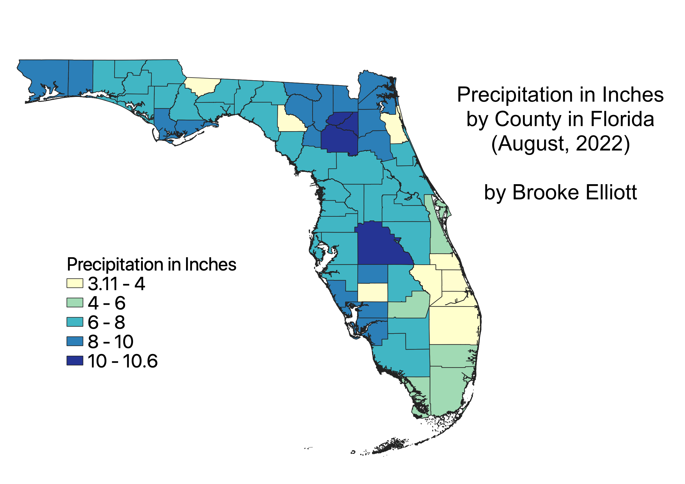

Precipitation by County in Florida (August 2022)
by Brooke Elliott
This map is a choropleth that depicts precipitation levels in Florida over the course of the month of August in total inches. This map was created
using data from the National Centers for Environmental Information in association with the National Oceanic and Atmospheric Administration. This map is
in the projection EPSG:3086, otherwise known as the Florida GDL Albers Projection.
I chose this data because August 2022 is the last time in this calendar year that Florida's precipitation fell naturally without being influenced by the first stirrings of its
autumnal hurricane season. Data such as monthly precipitation is critical for climatologists and meterologists looking for the causes of incoming natural disasters.

Here is a link to an interactive version of this map that shows individual precipitation values (in inches): https://brookeel.github.io/GEOG370/Homework7/qgis2web_2022_10_08-15_07_21_584556/index.html
Data used for this project:
Cleaned CSV Dataset of Precipitation in Florida
Link to GeoJSON File of Florida Counties
The original download for Florida's precipitation data can be found here: ncei.noaa.gov/cag/county/mapping/8/pcp/202208/1/value